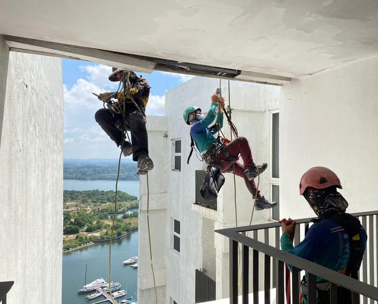

Building Operations
Day-to-day operations across residential and mixed developments — maintenance coordination, contractor follow-up, resident matters, and the technical and non-technical issues that come with running a building.
In property management since 2014
I'm a property and strata management professional in Johor Bahru. I manage building operations, lead project takeovers, and work with developers, JMBs and management corporations to get new and troubled developments running.



Day-to-day operations across residential and mixed developments — maintenance coordination, contractor follow-up, resident matters, and the technical and non-technical issues that come with running a building.
Taking newly secured developments from developer handover into live operation: setting up the management office, establishing procedures, and getting the site working.
Working between joint management bodies, management corporations, developers and residents, with structured reporting and regular site engagement.
Preparing House Rules for newly secured projects, alongside operational reports, records and notices.
Tender documentation and interviews, site visits for assessment and evaluation, client presentations, and Q&A on operational and site matters.
Happy to talk about property management, building operations, or a development you're looking after.
Get in touchI've worked in property management since 2014, starting in building administration before moving into site management. For eight years I ran buildings directly — Villa Ros and Park Avenue in Tampoi, Eco Cascadia and Iskandar Residences, then Greenfield Regency, Southkey Mosaic and The Lakefront Southkey with CBRE WTW. Since 2022 I've worked on the other end of the process at SA Property Management, assessing developments at tender stage and leading the takeover that turns a completed building into a managed one. I hold a Master in Management from UNIRAZAK.

Developments across Johor, Melaka, Selangor and Kuala Lumpur
Site visits to assess the development, evaluate its condition and scope the work, supported by tender documentation and client presentations.
Handover from the developer, setting up the management office, preparing House Rules, and putting reporting and procedures in place.
Onboarding and guiding the site team, resolving the issues a new building arrives with, and settling it into consistent day-to-day operation.
Resolved a long-running electrical double-billing dispute with TNB, recovering RM1.3 million in credit notes.
Traced and resolved an underground water pipe leak, saving the fund for the JMB/MC.
Led the takeover from developer handover into live site operation.
Stabilised operations on a development taken on with existing issues.
Managed daily building operations, reporting and stakeholder coordination.
Led the takeover and operational setup for a newly secured development.
Prepared House Rules for a newly secured project with MKH Development Berhad.
Stabilised site operations and supported the on-site management team.
Managed property operations, resident communication and contractor coordination.